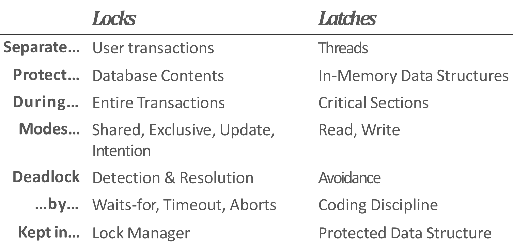
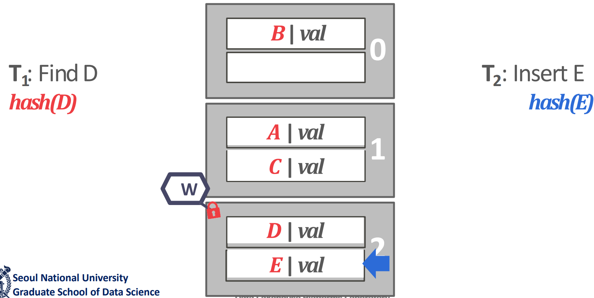
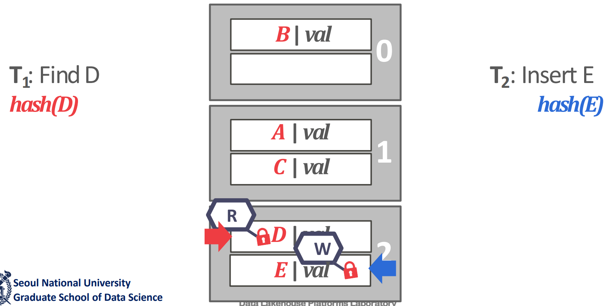
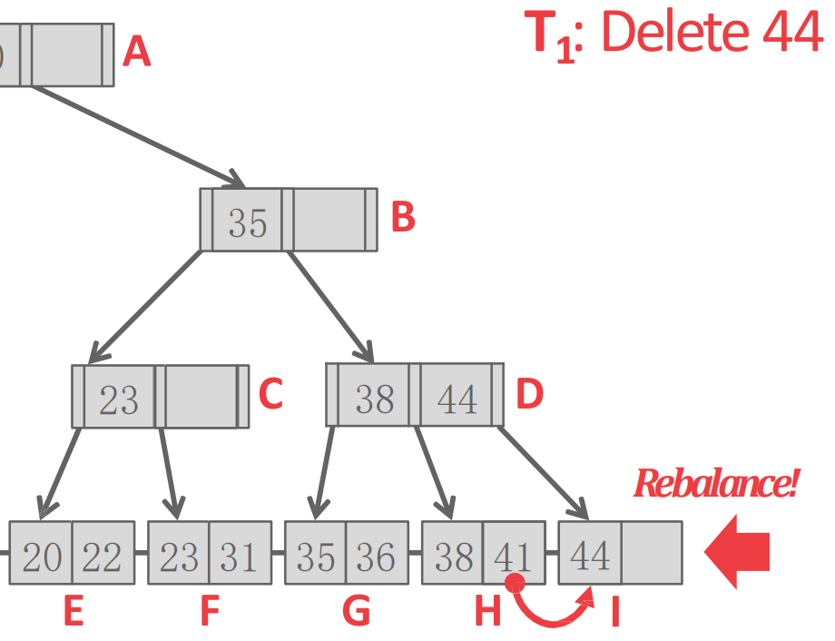
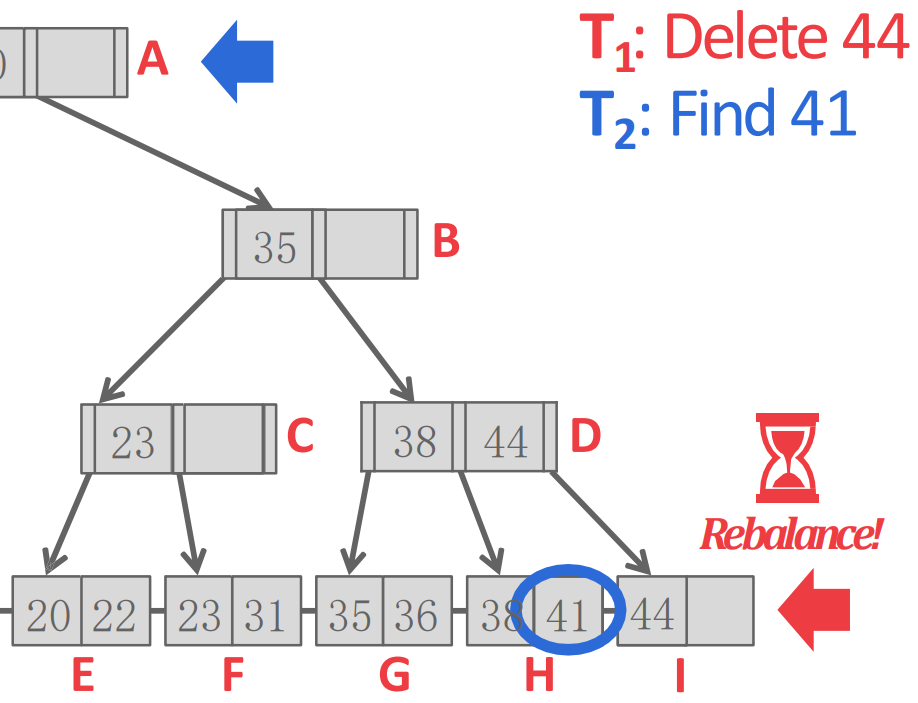
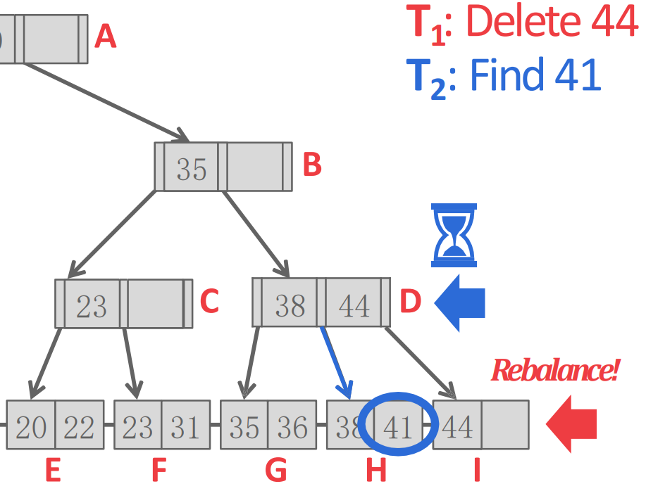
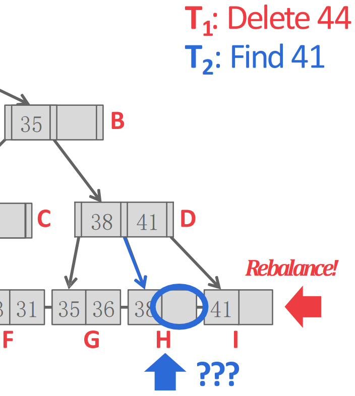

서울대학교 데이터사이언스대학원 정형수 교수님의 "데이터사이언스 응용을 위한 빅데이터 및 지식 관리 시스템" 강의를 필기한 내용입니다.
Index concurrency control
- Index concurrency control 은
- index data structure 에서
- concurrent 접근시에 올바른 작동을 하게 하기 위해
- control 하는 것이다.
- Thread 가 여럿일 때 공유 데이터에 접근하는 것을 data race 라고 하는데
- Read 만 할 때는 문제가 없음, write 가 뜨면 그때부터 문제가 생긴다.
- 누군가 write 해서 문제가 생기면 그것을 conflict 라고 한다.
- 이 문제를 control 으로 해결하기 위해 latch 를 사용한다.
- Latch 는 lock 이랑 동일; 다만 lock 은 table lock 등의 의미로 사용되므로 latch 라고 용어를 구분 (뒤에 나온다).
- Concurrency control 은 성능에 큰 영향을 미치고 이건 design 에 따라 달라지기 때문에 design 을 잘 하는 것이 좋다고 한다.
Correctness
- DBMS 에서 correctness 에는 두 종류가 있다.
- Logical: record 자체에 대한 correctness
- Physical: internal representation (index 와 같은 관련된 자료구조를 생각하면 된다) 에 대한 correctness
- KV 쌍들의 모음은 set 이고, hash 니 tree 니 모두 이 set 을 표현하기 위한 (즉, internal representaion) 자료구조이다. 이놈에 대한 correctness 가 physical correctness
- 가령 SMO 가 representation 을 바꾸는 연산이기 때문에 이때 physical correctness 가 지켜져야 한다.
Latch

- DBMS 에서는:
- Lock 은 logical content (즉, tuple, table) 에 대한 txn 들 간에 race 를 없애기 위한 것이다.
- 이놈은 그것을 사용하는 내내 잠겨있게 되고
- ACID 를 위해 rollback 이 가능해야 한다.
- Latch 는 data structure 에 대한 race 를 해결하기 위한 것이다.
- 이놈은 보통 아주 짧게 잠겨있다.
- Rollback 의 필요성이 없다.
- Latch 와 관련해서는 다음의 세 구현이 있다.
- Approach 1) OS Mutex (Sleeplock)
- 이놈은 lock, unlock API 두개만 지원하고
- 1 개의 thread 만 진입할 수 있다 (mutual exclusion).
- 즉, mode 를 지원하지 않는다.
- Approach 2) TAS spin latch (Spinlock)
- TAS:
test_and_set하는 atomic instruction - Loop 를 돌며 test 를 하고, 가능하면 set 하고 loop 안으로 진입하여 lock 을 잡는다.
- TAS:
- Approach 3) RWLatch
- Read mode, write mode 를 구분지어 latch 를 잡게해주는 놈을 RW-latch 라고 한다.
- 왜냐면 read 끼리는 concurrency control 이 필요 없기 때문.
- Read mode 는 shared, write mode 는 exclusive 라고도 부른다.
- mode 에 맞는 lock 을 하면 각 mode 로 진입한 thread 가 몇개가 있는지를 bookeeping 한 다음 이 정보로 누구를 기다리게 하고 누구를 들여보낼지를 결정
- read 도중에 write 가 들어오면 그놈은 기다리고, 이후에 또 read 가 들어오면 앞선 read 와 write 가 모두 끝날때까지 기다린다
- Read mode, write mode 를 구분지어 latch 를 잡게해주는 놈을 RW-latch 라고 한다.
- Approach 1) OS Mutex (Sleeplock)
- Latch 를 잡는 단위 granularity 라고 표현한다.
Hash table latching: Slot latch
- Hash table 는 tree 와 다르게 SMO 를 별로 고려하지 않아도 된다. structure 변경이 별로 없기 때문.
- 가령 linear 의 경우 그냥 주렁주렁 매달아놓는 정도가 다이다.
- 따라서 physical correctness 를 크게 신경쓰지 않아도 된다.
- 이러한 점 때문에 parallelism 에 친화적이라고들 한다.
- 또한 thread 가 실제로 접근하는 것은 그 table 의 한 entry 뿐이기 떄문에 이 전체를 latch 잡는 것은 이상하다
- 즉, hash table 에서는 latch 를 작은 단위로 잡는 것이 정론이다.
- 물론 근데 관리해야 할 latch 가 많아진다는 단점은 있다.

- Page latch: page 단위로 latch 를 잡는 것
- 근데 page 의 다른 slot 에 접근하는 것도 막히는 문제가 있다.

- Slot latch: slot 단위 latch
- 위 방법에서 slot latch 를 사용하는 것이 표준이다. 이건 해결된 문제란다.
- 참고로 구조가 단순하기 때문에 RW-latch 말고 그냥 single-mode latch 를 사용하기도 한다.
- 다만 table resize 등의 상황으로 인해 table global lock 이 존재하긴 한다.
- 또한 latch 를 slot 별로 하나만 사용하기 때문에 deadlock 이 없다
Tree latching
- 당연히 B+tree 는 split, merge 가 있기 때문에 hash 와는 다르게 logical, physical correctness 가 모두 관여된다.
SMO race on B+ tree

- 일단 상황은 이 H 의 44 를 지우고 41 를 I 로 옮겨서 rebalance 하려고 한다고 해보자.

- 근데 이때 context switch 가 되어 버리고 가 들어와서 41을 찾으러 간다고 해보자.

- 근데 가 D 까지 와서 H 로 가려는 찰나에 다시 으로 context switch 되어 하던 rebalncing 을 수행해버리면

- 는 H 로 가도 41 을 찾을 수 없게 된다.
- 이때의 문제는 이 H 로 가면 될것이라고 믿고 있었지만 중간에 이 껴들어서 이 믿음을 바꿔버렸다는 것이다.
- 그래서 이 믿음 (invariant) 을 중간에 방해하지 못하게 하기 위해 이 구간동안 atomic 하게 처리해야 한다.
- 즉, 읽는 것 (read) 와 read 를 기반으로 action 을 취하는 것 (read-follow) 간에 누군가 끼어들어서는 안된다는 것.
- 이럴 때 사용할 수 있는 것이
load_and_store_conditional: 조건에 따라 read 하고 store 하는 것을 atomic 하게 해주는 instruction
- 이때 내가 들어가려고 하는 H 와 이제 나오려고 하는 D 모두에 latch 를 걸면 해결된다: tree 의 경우에는 latch 하나로는 안된다.
Latch crabbing (coupling)
- 이건 B+ tree 뿐 아니라 SMO 작업이 일어날 수 있는 자료구조에서 latch 를 잡는 프로토콜이다.
- 핵심 아이디어는 child 가 SMO 되면 parent 의 상태 또한 변하게 되기 때문에,
- Parent 와 child 의 latch 를 잡은 이후에 child 가 SMO 될 것 같다면 parent 의 latch 를 풀지 않고
- Child 가 SMO 되지 않는 확신이 있으면 지금까지 잡은 모든 parent 의 latch 를 푸는 것이다.
- 이때 저 “확신” 은 어떻게 하는가:
- 자신이 read 작업이라면 자신이 SMO 를 유발할 가능성은 없다. 이때는 안심하고 parent 의 latch 를 풀어도 된다.
- 자신이 insert 작업이라면 split 이 발생할 가능성이 있다. 이때는 child 에게 남은 공간이 있는 경우에만 parent (와 그의 선조들) latch 를 푼다.
- 자신이 delete 작업이라면 merge 가 발생할 가능성이 있다. 이때는 child 가 절반 보다 많이 차있는 경우에만 parent (와 그의 선조들) latch 를 푼다.
- 여기서 잡는 latch 는
- Read 인 경우에는 read latch 를 잡고,
- 따라서 이때 잡는 latch 는 “내가 읽고 있으니까 데이터 변경이나 SMO 를 하지 말아다오” 의 의미라 할 수 있다.
- Insert, update 인 경우에는 write latch 를 잡는다.
- 따라서 이때 잡는 latch 는 “이 node 는 SMO 가 발생할 수 있으니까 아직 들어오지 말아다오” 의 의미라고 할 수 있다.
- Read 인 경우에는 read latch 를 잡고,
- 위의 예시 에서 이 crabbing 을 사용하면 어떻게 이 문제가 해결되는지 알아보자.
- 은 A, B 가 모두 절반밖에 안남았기 때문에 이놈의 latch 를 잡고 있다가 D 가 가득 차있는 것을 보도 A, B 에 대해서는 푼다.
- 그리고 I 로 왔을 때 이놈도 절반밖에 안남았기 때문에 D 는 풀어주지 않는다. 이 상황에서 로 넘어간다.
- 로 왔을 때는 여기에 이 잡아놓은 write latch 가 있기 때문에, 들어가지 못한다.
- 다시 로 와서 SMO 를 하고, 로 왔을 때는 이미 SMO 가 끝난 상태를 보기 때문에 정상적으로 41 에 접근한다.
- 근데 그러면 잘못하다가는 root 부터 쭉 write latch 가 잡히는 상황이 생길 수도 있다. 그러면 index 전체를 latch 걸어버린 셈이기에 아무도 접근할 수 없을 수 있다는 문제가 있다.
- MySQL 에서는 이 작업은 어려워서 index concurrency 를 제공해 주지 않았다가 oracle 에 인수된 다음에야 구현되었다고 한다.
Optimistic concurrency control
- Optimistic concurrency control 은 conflict 가 안날 것이라고 낙관적으로 생각하고 처리하다가,
- 만약에 conflict 가 일어났을 때 (조금 더 큰 비용을 지불하는) conflict handling 을 해주는 방법이다.
- B+ tree 에서는 split 안될 것이라고 생각하고 read latch 만 잡으면서 그냥 들어가다가,
- Split 이 안되면 땡큐인데 (prediction hit),
- Split 이 일어나면 (prediction miss) SMO 하지 않고 다시 위로 올라가서 write latch 를 잡으면서 다시 내려오는 방식을 취할 수 있다.
- 이렇게 하면 root 에 대한 write latch 를 잡는 시간이 줄어드니까 좋다: root 는 매우 빈번하게 접근되는 곳인데 이런곳에 write latch 가 잡혀버리면 나머지 애들은 전부 놀게 되는 것.